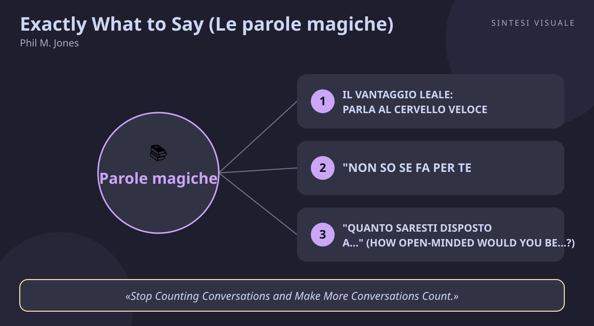

Home / Libri / Exactly What to Say (Le parole magiche)
Exactly What to Say (Le parole magiche)
Phil M. Jones · Vendite e persuasione
«Exactly What to Say (Le parole magiche)»
- Apertura senza rifiuto
- Mentalita aperta
- Futuro anticipato
- Rendere il si facile
🧭Introduzione
Phil M. Jones è un formatore e speaker britannico che ha passato la carriera in prima linea nelle vendite: ha formato oltre due milioni di venditori nel mondo e da giovanissimo ha vinto il prestigioso "British Excellence in Sales and Marketing Award". La domanda che lo tormentava era semplice: perché, a parità di prodotto e risorse, alcuni vendono tantissimo e altri restano al palo? La risposta che ha trovato è diventata questo libro, pubblicato nella primavera del 2017 (prima edizione Box of Tricks, 148 pagine; poi Page Two Books) e diventato un bestseller da oltre un milione di copie, tradotto in più di venti lingue.
Perché questo libro conta oggi: ogni giorno dobbiamo convincere qualcuno — un cliente, il capo, un figlio, un amico su WhatsApp. Viviamo di conversazioni decisive giocate in pochi secondi, e quasi sempre improvvisiamo proprio la frase che conta di più. Jones offre il contrario dell'improvvisazione: 22 brevi frasi pronte, testate sul campo, che abbassano le difese e aiutano l'altro a decidere. È utile a chi vende, a chi guida un team, a chi negozia, ma anche a chiunque voglia smettere di sentirsi dire "ci penso" e non sapere come rispondere.
📘Riassunto
La scintilla centrale: piccole differenze nelle parole producono grandi differenze nelle risposte — alcune frasi parlano direttamente al cervello veloce che decide, e trasformano un "forse" in una decisione.
La struttura logica segue il percorso del libro: l'idea di fondo (i migliori sanno esattamente cosa dire, come dirlo e come farlo contare); poi le 22 "parole magiche", una per capitolo, ciascuna con la psicologia che la rende efficace e decine di esempi d'uso in contesti di vendita e di vita quotidiana; infine l'invito a preparare le frasi prima delle conversazioni invece di inventarle sotto pressione.
Il punto di svolta è il ribaltamento del mestiere di vendere: il tuo obiettivo non è portare qualcuno dal "no" al "sì", ma aiutarlo a uscire dal "forse". Il cervello subconscio non conosce il "forse": risponde per riflesso sì o no, e le parole giuste eliminano l'opzione di restare fermi. Quando capisci questo, smetti di descrivere meglio il prodotto e inizi a rendere impossibile il "no".
L'eredità oggi: Exactly What to Say è diventato il manuale tascabile dei team di vendita moderni e ha generato un intero movimento ("un fair advantage nella conversazione"), con edizioni workbook, corsi e un seguito dedicato ai giovani leader (The Magic of Words, 2021). La formula "How open-minded would you be…?" è entrata nel linguaggio standard dei venditori anglosassoni.
💡Concetti chiave
- Il vantaggio leale: parla al cervello veloce — il subconscio decide per riflesso, senza "forse": le parole giuste gli parlano direttamente.
- "Non so se fa per te, ma…" — l'apertura senza rifiuto che toglie pressione e accende la curiosità.
- "Quanto saresti disposto a…" — fai leva sul desiderio di ognuno di vedersi come una persona di mentalità aperta.
- "Come ti sentiresti se…?" e "Immagina…" — porta l'altro nel futuro a cose fatte, così la decisione diventa un'emozione già vissuta.
- Guida con le domande, non con le affermazioni — "Quali domande hai per me?", "Cosa ti spinge a dirlo?" e "Immagino tu non abbia ancora avuto modo di…".
- Rendi il sì facile: opzioni, storie e passi successivi — tre opzioni, "due tipi di persone", "se… allora…", "quello che succede ora è…" e la parola "abbastanza".
📖1. Il vantaggio leale: parla al cervello veloce
- Definizione Jones chiama "magic words" le frasi che parlano al cervello subconscio, programmato a decidere in fretta senza rimuginare: come un computer, conosce solo sì e no e non si ferma mai sul "forse". Usarle ti dà quello che lui chiama un "fair advantage", un vantaggio leale nella conversazione.
- Esempio due agenti con lo stesso prodotto: il primo spiega per venti minuti i dettagli tecnici e riceve "devo pensarci"; il secondo usa tre frasi preparate e porta il cliente a scegliere tra due opzioni. Stesso prodotto, esiti opposti.
- Come applicarlo prima di ogni conversazione importante scriviti su un foglio le 2-3 frasi esatte che userai nei momenti chiave (apertura, gestione obiezione, chiusura). Una frase, un compito: non improvvisare la parte decisiva.
- Errore comune credere che conti il "dono della parlantina" o saper improvvisare — Jones insiste che conta l'opposto: decidere le parole prima di parlare, perché sotto pressione il cervello inventa frasi deboli.
- Collegamento Daniel Kahneman (Pensieri lenti e veloci, già trattato in questa rubrica): le parole magiche parlano al Sistema 1, quello veloce e intuitivo; Robert Cialdini (Pre-Suasion): ciò che dici un attimo prima della richiesta decide quasi tutto.
📖2. "Non so se fa per te, ma…" (I'm not sure if it's for you, but…)
- Definizione è l'apertura anti-rifiuto del libro: premettere "non so se fa per te" comunica "qui non c'è pressione", e il "ma…" che segue riaccende curiosità e spinge l'altro a giudicare da sé invece di difendersi.
- Esempio invece di attaccare con "Vuoi comprare il nostro servizio?", dici: "Non so se fa per te, ma abbiamo aiutato un negozio come il tuo a risparmiare due ore al giorno di amministrazione — ti va se ti racconto come?". Il cliente pensa "sarò io a giudicare" e chiede "dimmi di più".
- Come applicarlo usala per aprire qualsiasi proposta delicata (una vendita, un invito, una richiesta al capo) e metti dopo il "ma" un beneficio concreto, mai una domanda di acquisto secca. Tono curioso e sincero, non teatrale.
- Errore comune usarla come trucco furbo con tono falso, o peggio chiuderla con "…ma vuoi comprare X?": la frase apre la porta, non chiude la vendita — se spingi subito, bruci la fiducia appena creata.
- Collegamento l'anti-pressione di Chris Voss (Never Split the Difference, già trattato): etichettare e dare controllo all'altro abbassa le difese meglio di qualsiasi argomentazione.
📖3. "Quanto saresti disposto a…" (How open-minded would you be…?)
- Definizione quasi tutti si considerano persone di mentalità aperta — l'alternativa (essere "chiusi") è inaccettabile. Chiedere "quanto saresti disposto a…" incanala questo bisogno di identità verso la tua proposta e sposta le probabilità a tuo favore.
- Esempio invece di "Vuoi cambiare fornitore?", dici: "Quanto saresti disposto a valutare un fornitore locale che ti garantisce gli stessi costi di quello estero?". Dire di no equivarrebbe ad ammettere "sono una persona chiusa": quasi tutti rispondono "raccontami".
- Come applicarlo distingue le due forme: "quanto saresti disposto…" apre una discussione, "saresti disposto a…" chiede una decisione. Usa la prima per esplorare, la seconda quando vuoi chiudere. Metti sempre dopo un risultato desiderato, mai il tuo prodotto ("…a dimezzare i tempi di consegna?" e non "…a provare il nostro software?").
- Errore comune porre la domanda sul prodotto invece che sul risultato ("saresti disposto a provare il nostro corso?") — così l'altro deve dire sì a te, non a un suo desiderio, e la magia svanisce.
- Collegamento Cialdini e il principio di coerenza (Le armi della persuasione): una volta che uno si è dichiarato "aperto", agirà in modo coerente con quell'immagine di sé.
📖4. "Come ti sentiresti se…?" e "Immagina…" (How would you feel if…? / Just imagine…)
- Definizione sono le frasi del viaggio nel tempo: invece di descrivere caratteristiche, proietti l'altro in un futuro in cui il problema è già risolto e gli fai assaggiare in anticipo l'emozione di quel futuro.
- Esempio invece di elencare le funzioni di un gestionale, dici: "Come ti sentiresti se a fine mese la fatturazione fosse già chiusa senza rincorrere nessuno? Immagina il venerdì pomeriggio libero dalle scartoffie…". Il cliente non valuta più il software: desidera quel venerdì.
- Come applicarlo costruisci la frase in tre passi — problema attuale dell'altro (che ti ha raccontato lui), futuro risolto, emozione ("sollevato", "tranquillo", "libero"). Usala anche fuori vendita: con un figlio ("come ti sentiresti se l'esame fosse già alle spalle?"), con te stesso per decidere.
- Errore comune descrivere il futuro in modo generico ("immagina quanto sarà bello") senza agganciarlo a un problema reale che l'altro ti ha confidato: senza aggancio, suona come pubblicità e non come empatia.
- Collegamento la visualizzazione usata nello sport e nella terapia cognitivo-comportamentale; Chip e Dan Heath (Made to Stick, già trattato): le idee che si possono "toccare con mano" vincono su quelle astratte.
📖5. Guida con le domande, non con le affermazioni
- Definizione tre mosse del libro per non litigare mai con un'obiezione: sostituire "hai domande?" con "quali domande hai per me?" (presuppone che ce ne siano ed è più facile rispondere); rispondere a un'obiezione con "cosa ti spinge a dirlo?" (l'altro deve spiegarsi e ti regala informazioni); premettere "immagino tu non abbia ancora avuto modo di…" invece di accusare ("non l'hai ancora fatto?").
- Esempio il cliente dice "Devo parlarne con il mio socio". Invece di controbattere, chiedi con calma: "Cosa ti spinge a dirlo?". Spesso emerge il vero ostacolo ("in realtà è il budget di marzo") e puoi lavorare su quello invece di discutere col pretesto.
- Come applicarlo prepara in anticipo le 3-5 domande che farai sempre nella fase di scoperta del tuo settore, come un avvocato prima dell'arringa: il tuo lavoro non è abbellire il sì, ma rendere il no impossibile da sostenere. E trasforma ogni "hai…?" chiuso in "quale/cosa…?" aperto.
- Errore comune rispondere alle obiezioni con argomenti ("ma il nostro prodotto costa meno!"): entri in un braccio di ferro dove l'altro deve difendere la sua frase. La domanda invece sposta il peso della spiegazione su di lui, senza scontro.
- Collegamento William Ury (Getting Past No e Getting to Yes, già trattati): vai dietro la posizione dichiarata per scoprire l'interesse reale; Socrate e la maieutica: la domanda giusta fa partorire all'altro la risposta che cercavi.
📖6. Rendi il sì facile: opzioni, storie e passi successivi
- Definizione il gruppo di frasi di chiusura: offrire tre opzioni e chiedere "quale ti risulta più comoda?" (scegliere tra tre è più facile che dire sì o no); "ci sono due tipi di persone…" (tutti vogliono essere nel gruppo giusto); "se decidi di provarci, allora ti prometto che…" (lega impegno e garanzia); "quello che succede ora è…" (tu descrivi il passo successivo invece di chiedere "cosa vuoi fare?"); e la parola "abbastanza" per alzare l'asticella ("quanto sarebbe abbastanza per partire?").
- Esempio invece di "Allora, compri?", dici: "Ci sono tre modi per partire: base, completo o su misura — quale ti risulta più comodo? Quello che succede ora è semplicissimo: ti mando il riepilogo e partiamo con la prova di marzo". Il cliente sceglie dentro il tuo recinto invece di scappare dal recinto.
- Come applicarlo non presentare mai una sola proposta secca: costruiscine sempre tre (piccola, media, ideale) e rendi quella centrale la più ovvia. Chiudi ogni incontro descrivendo tu il passo successivo con "quello che succede ora è…", senza chiedere il permesso di avanzare.
- Errore comune fare una pila di tre domande in un fiato ("ti piace? vuoi partire? quando paghi?") — l'altro si rifugia nel "ci penso". Una frase, un compito: prima l'opzione, poi il passo successivo, poi la garanzia.
- Collegamento Richard Thaler e Cass Sunstein (Nudge, già trattato): l'architettura della scelta — chi disegna le opzioni disegna la decisione; Matthew Dixon (The Challenger Sale): il venditore efficace insegna e guida, non aspetta che il cliente decida da solo.
💬Citazioni da ricordare
"Using words that talk straight to the part of the brain that is free from maybes and responds on reflex gives you a fair advantage in conversation and can result in you getting your own way more often." — Conta perché è il cuore del libro in una frase: non convincere il cervello che discute, parla a quello che decide.
"They know exactly what to say, how to say it, and how to make it count." — Conta perché descrive la vera differenza tra chi ottiene risultati e chi no: non il talento o il prodotto, ma le parole preparate al momento giusto.
"Stop Counting Conversations and Make More Conversations Count." — Conta perché rovescia l'ossessione moderna per i numeri (più chiamate, più messaggi): non servono più conversazioni, servono conversazioni che contano.
Il cervello subconscio non conosce il "forse": risponde per riflesso sì o no, e le parole giuste eliminano l'opzione di restare fermi. E il tuo obiettivo non è portare qualcuno dal "no" al "sì", ma aiutarlo a uscire dal "forse" rendendo il no impossibile da scegliere.
🌍Esempi di oggi
- Il preventivo che resta in sospeso — Mandi un'offerta e il cliente sparisce col classico "ci penso". Invece di rincorrerlo con sconti, scrivi: "Immagino tu non abbia ancora avuto modo di guardarlo con calma — quali domande hai per me?". Riapri senza accuse e lo costringi gentilmente a dirti il vero ostacolo.
- La riunione in cui proponi un'idea al capo — Invece di "dobbiamo cambiare software", prova: "Non so se fa per noi, ma quanto saresti disposto a valutare una soluzione che ci fa risparmiare mezza giornata a settimana? Come ti sentiresti se la reportistica di marzo fosse già pronta da sola?". Hai tolto pressione, attivato l'orgoglio di essere aperti e fatto assaggiare il futuro.
- La trattativa in famiglia su una spesa — Devi convincere tuo marito o tua moglie a spendere per un corso. Invece di litigare sul prezzo, offri tre opzioni ("base online, completo in presenza, percorso annuale — quale ti risulta più comodo?") e chiudi con "quello che succede ora è che proviamo il primo modulo, e se non funziona ti prometto che lo interrompiamo". Stessa tecnica dei venditori, zero manipolazione: solo una decisione resa facile.
🛠️Azioni pratiche
- Prepara 3 frasi prima della prossima conversazione difficile: scriviti l'apertura ("non so se fa per te, ma…"), una domanda guida ("quali domande hai per me?") e la chiusura ("quello che succede ora è…"). Una frase, un compito — poi usale davvero.
- Trasforma 5 domande chiuse in domande aperte: prendi le mail e i messaggi che mandi di solito ("hai domande?", "va bene?", "ci sentiamo?") e riscrivili ("quali domande hai per me?", "quando sarebbe un buon momento per sentirci?", "quale delle tre opzioni ti risulta più comoda?"). Nota quante risposte in più ricevi.
- Prova la formula "quanto saresti disposto…" una volta al giorno: col cliente, col collega, in famiglia — sempre agganciata a un risultato che l'altro desidera ("…a risparmiare un'ora al giorno?", "…a chiudere questa pratica entro venerdì?"). Osserva come quasi nessuno riesce a dire di no all'essere "di mentalità aperta".
💎Da portare a casa
Non servono più parole per convincere: serve la frase esatta, detta al momento esatto, per aiutare l'altro a decidere.
Vuoi approfondire? Rispondi in chat con il numero del concetto (1–6) che vuoi esplorare — cervello veloce, apertura senza rifiuto, mentalità aperta, futuro anticipato, domande guida o chiusure facili — oppure chiedimi come applicare le parole magiche a una tua situazione reale: vendite, trattative, colloqui, riunioni o discussioni in famiglia.
🖼️In un colpo d’occhio

Tocca l’immagine per ingrandirla.